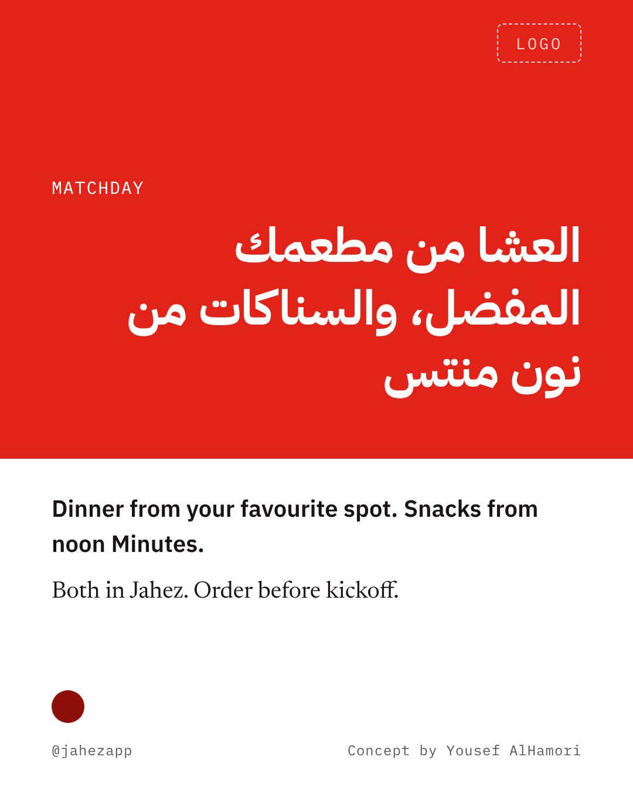
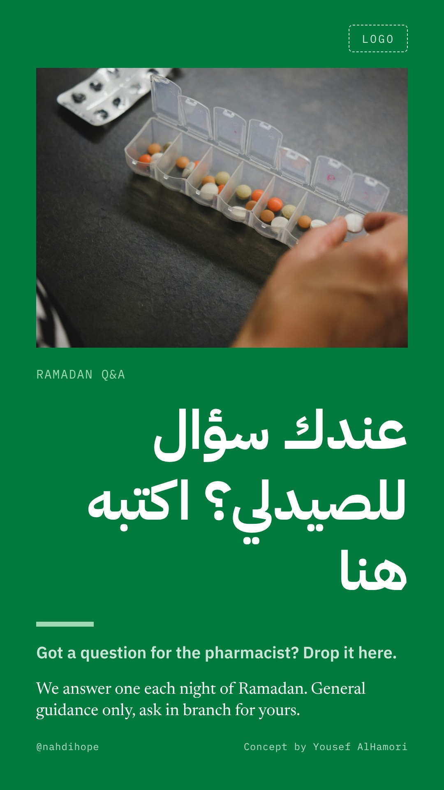
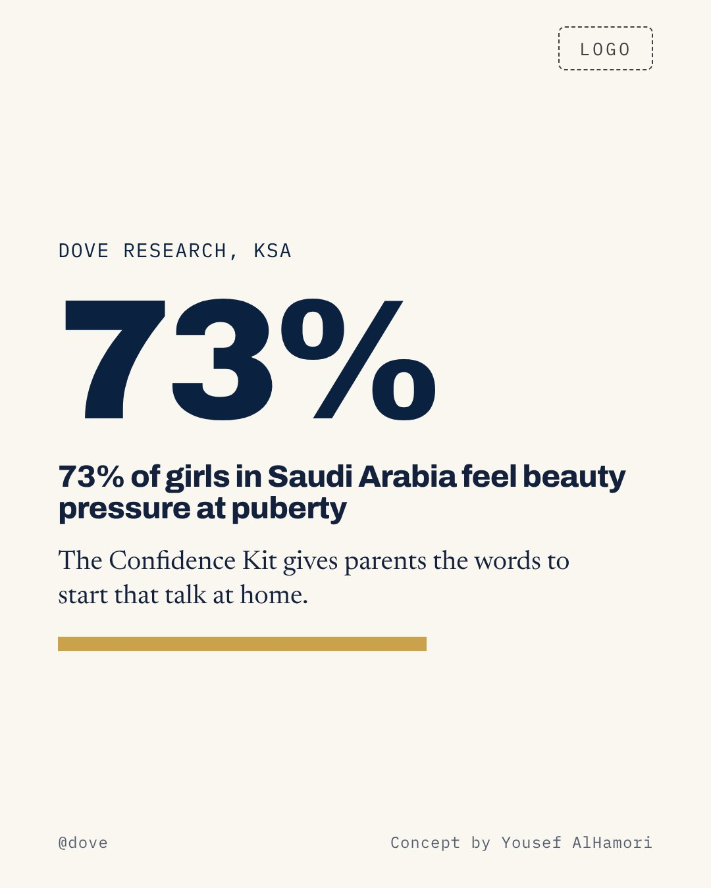
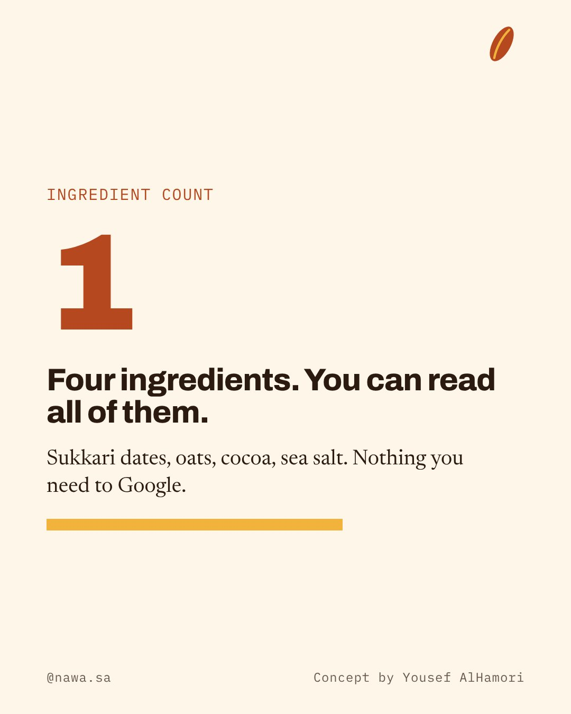
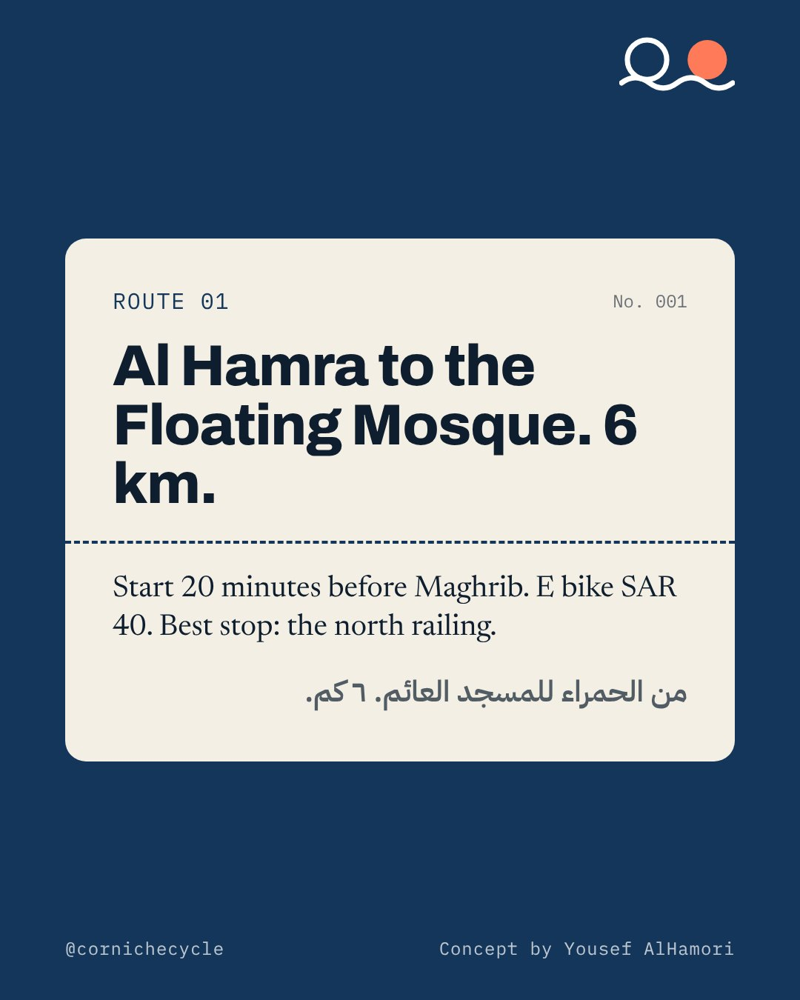
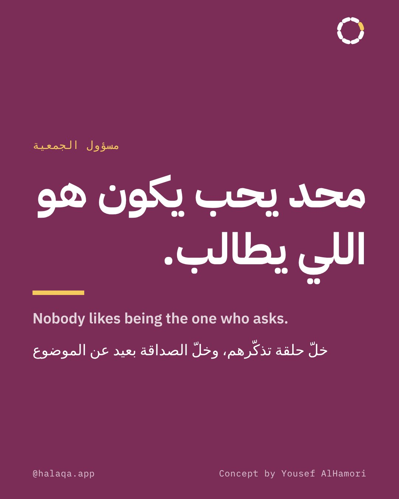

Brand work
15 brands, one method
For each brand: an audit, a strategy, a campaign with a reel shot list, three finished posts, a two week calendar, a creator plan, community replies, KPIs and the research that backs it. Ten are real brands, done as unsolicited concepts. Five are brands I invented.
Saudi brands

AlmaraiDairy and food
Almarai already owns the family table; short form leftover recipes can carry its anti waste message daily.
The Second Plateالصحن الثاني

ALBAIKQuick service restaurant, broasted chicken
ALBAIK queues are already a story; Queue Stories turns 50 years of loyalty into shareable memories.
Queue Storiesحكايات الطابور

JahezFood and grocery delivery app
Jahez can own matchday at home: one app for the food, the snacks and everyone watching.
Matchday Spreadسفرة الماتش

flynasLow cost airline
flynas lets AI pick seats by scenery. Real passenger window clips would prove every view is worth booking.
Next to the Windowجنب الشباك

NahdiPharmacy and health retail
Nahdi already calls itself a community pharmacy. A nightly Ramadan Q&A puts its pharmacists on camera.
One Question a Nightسؤال كل ليلة

barn'sCoffee and drive thru
barn's says every cup has a story. Drive Thru Stories collects them at the window.
Drive Thru Storiesحكايات الدرايف ثرو
Global brands in Saudi Arabia

NeutrogenaDermatologist backed skincare
Turn Beauty to a Science into an Arabic dermatologist series built around Ramadan hydration.
Science After Iftarعلم بعد الفطور

DovePersonal care and haircare
Turn the Saudi Confidence Kit into a weekly Arabic mother and daughter series.
Confidence Starts at Homeالثقة تبدأ من البيت

NikeSportswear
Girls already walk every Ramadan night. Run by Eid turns that walk into running.
Run by Eidاركضي قبل العيد

SpotifyMusic and audio streaming
Ramadan listening peaks at 3am. GM of Suhoor crowns whoever runs the suhoor playlist.
GM of Suhoorمسؤول جو السحور
Fictional brands I created

NawaSnacks and FMCG
Nawa moves off the white backdrop and into real school and gym bags across Jeddah.
What's In Your Bag?وش في شنطتك؟

Corniche Cycle Co.Bike and e bike rental
Corniche Cycle Co. sells the sunset ride, not the rental rate, with a nightly Maghrib lap.
The Sunset Lapلفة المغرب

Sadu HouseOud and fragrance
Sadu House turns each weave pattern into a gifting guide, matching scents to the people you love.
The Pattern Giftهدية بنقشة

HalaqaFintech savings app
Halaqa celebrates the friend who always runs the jam'iya notebook, then retires the notebook for good.
Retire the Notebookودّع الدفتر

The BalconyBoard game and tea cafe
The Balcony films the losing moment at the table and makes the loser buy the tea.
Loser Pays the Teaالخسران يعزم على الشاهي